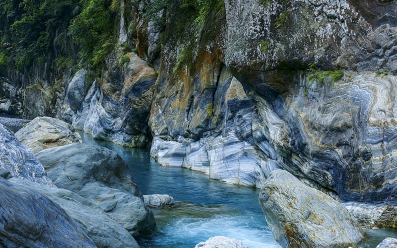
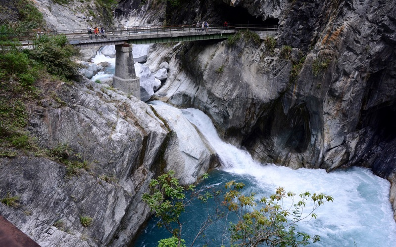
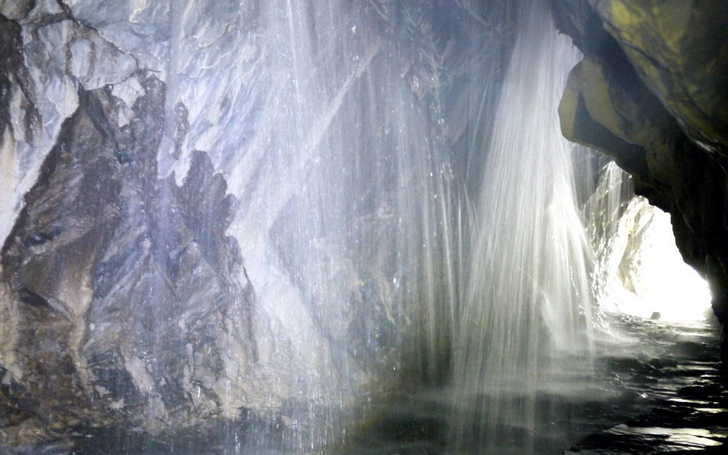
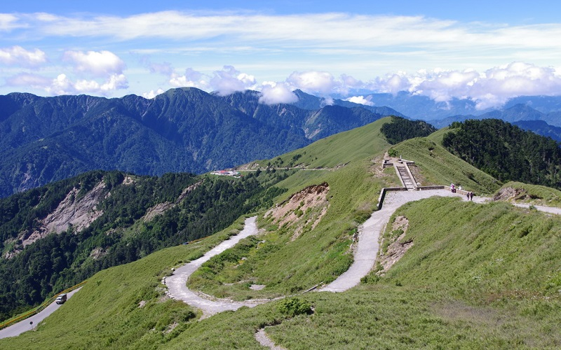
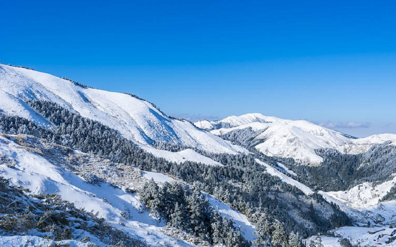

Taroko National Park
Hualien County
Taroko Gorge and the Liwu River
   TTaroko National Park spans Taichung City, Nantou County, and Hualien County. It was named after the aboriginal tribes
once lived here, the Truku people. Cliffs, mountains and gorges are the features of the park. Among them, the Taroko Gorge
is the landmark gorge of the park carved by the Liwu River. Baiyang Waterfall is a magnificent waterfall in the park,
and the Baiyang Trail is contructed by the Taipower Company to make use of the hydraulic power in 1984. However,
after being assessed that the area is not suitable for the construction of dams, the trail became an access for tourist
to enjoy the beauty of the Baiyang Waterfall. In the end of the trail sits the Cave of Water Curtain. Mountain spring squirts
from the on the top of the rock cave, making the scenery of "the water curtain". Hehuanshan is a part of
the Central Mountain Range. In winter, it becomes a popular tourist spot in winter for the snowy scenery, which is barely
seen in the rest of Taiwan.
- Official Website: https://www.taroko.gov.tw/en
- Best seasons: all year around
- Transportation:
Taroko National Park is accessible West from Xincheng Station of the Taiwan Railways Administration.